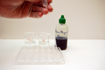

Click on photos to enlarge.
| step 1: |
Transfer approximately 20 mL of the acid solution of unknown concentration to a labelled 50-mL beaker.
|
| step 2: |
Transfer approximately 20 mL of the 0.100-mol/L NaOH(aq) to a labelled 50-mL beaker.
|
| step 3: |
Depress the bulb of the first pipette, and draw some of the acid solution into the pipette.
|
| step 4: |
Gently squeeze the bulb of the pipette, and carefully deliver 10 drops of the acid solution into the first well of the multiwell
dish. (Make sure that all drops are consistent in size and that you position the pipette in such a way that minimizes
splashing as the drops fall into the well.)
|  |
Drops of acid are transferred to the well. |
|
Control of pipette position and pressure on the bulb provides consistent drop size. |
|
| step 5: |
Add 1 drop of indicator to the acid solution in the watch glass or the first well. Record the colour of the indicator in your
data table.
|
| step 6: |
Depress the bulb of the second pipette, and draw some of the NaOH(aq) into the pipette.
|
| step 7: |
Hold the pipette containing the NaOH(aq) over the well containing the acid solution.
|
| step 8: |
Gently squeeze the bulb and carefully deliver drops of NaOH(aq) into the well until the indicator changes colour. Record
the number of drops required and the final indicator colour in your table.
| Results: |
| Trial |
Volume of Solutions (drops) |
Endpoint Colour |
Comment |
| HCl(aq) |
NaOH(aq) |
| 1 |
10 |
8 |
dark blue |
past desired endpoint |
| 2 |
11 |
9 |
light blue |
past desired endpoint |
| 3 |
12 |
10 |
green |
desired endpoint |
| 4 |
12 |
11 |
green |
desired endpoint |
| 5 |
12 |
10 |
green |
desired endpoint |
| Note: The volume of the test solution used can be adjusted if trials do not have the preferred
endpoint or if the volume of standard solution required is very low. |
|
|
| step 9: |
Repeat steps 3 to 8 using another well. Repeat the procedure until you obtain three trials that demonstrate consistency
that is within one drop of NaOH(aq) to reach the endpoint.
|